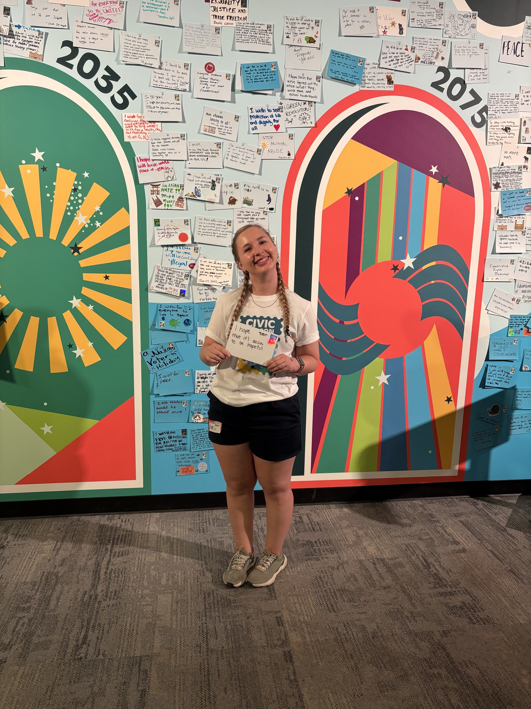

Founder of Conscious Futures — researcher, facilitator, and futures strategist.

"I'm Kate Barranco, founder of Conscious Futures. I work with civic and nonprofit leaders on the strategic questions in front of them — through research, narrative, facilitation, and futures thinking, grounded in the belief that the people closest to the work should help shape the answers."
Over five years and 30+ projects, Kate has partnered with 20+ organizations and collaborators — including a featured essay with New America, a Community of Practice engagement with Harmony Labs, and contributions to the Civic AI Index with the National Conference on Citizenship.
Participatory research, systems awareness, and listening practices that surface patterns often overlooked, marginalized, or buried beneath dominant narratives.
Futures thinking, narrative reframing, and speculative design that expand the space of what feels plausible and desirable — especially against dystopian defaults.
Translating insight and imagination into strategic orientation, prototype design, and relational practice, so futures aren't just imagined but lived into.
Outside of projects, I come alive through movement, music, and discovery. Boxing grounds me, music fuels my creativity, and solo travel opens me to wonder and perspective. I feel most at home when I'm exploring new places and leaning into moments that spark joy and curiosity.